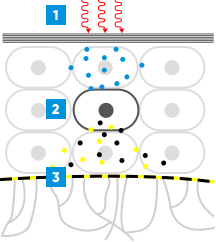

Снижает гиперчувствительность кожи и повышает порог
переносимости, блокируя ответ нейрорецепторов*

1
Стимуляция кератиноцитов
Нейросенсином
2
Выработка эндорфинов
и энкефалинов кератиноцитами
3
Блокировка всех сигнальных путей
боли (включая TRPV1)
*К. Линкер с соавторами Биологические пептиды: от лабораторного опыта до
функционального средства ухода за кожей Int.J. Cosm. Sci., выпуск 22, стр.207-218 (2000)